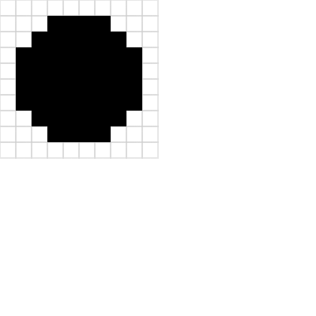

w10 <<
Previous Next >> w12_hw
w11_hw
以下影片說明如何利用近端可攜系統維護個人作業網站:
1. 已知可以用 Python 程式由上往下列印三角形 *, 或由左往右列印三角形 *, 請將此程式延伸到可以在 10x10 的字元區域中, 以 "*" 字元列印出圓型區域. 完成後請將程式碼存入個人 Gist 後, 直接在個人作業網站中的 Brython 頁面中執行. (提示: ?src=gist_script_URL)
第一題解答:*號圓形
import math
# 圓心 (5, 5) 和半徑 4
center_x = 5
center_y = 5
radius = 4
# 10x10 的字元區域
size = 10
for y in range(size):
row = ''
for x in range(size):
# 計算 (x, y) 到圓心的距離，若距離小於等於半徑則印星號
if math.sqrt((x - center_x) ** 2 + (y - center_y) ** 2) <= radius:
row += '＊'
else:
row += ' ' # 全形空格
print(row)
＊
＊＊＊＊＊
＊＊＊＊＊＊＊
＊＊＊＊＊＊＊
＊＊＊＊＊＊＊＊＊
＊＊＊＊＊＊＊
＊＊＊＊＊＊＊
＊＊＊＊＊
＊
2. 已知可以在網頁中利用 Brython 繪製方格與塗色, 如下連結, 請設法修改此一程式, 直接將程式存入個人的 Gist, 並利用黑色方塊圍出一個圓形區域.
第二題解答:網頁上的方格與塗色
from browser import html
from browser import document as doc
# 利用 html 建立 canvas 超文件物件
canvas = html.CANVAS(width=400, height=400)
brython_div = doc["brython_div1"]
brython_div <= canvas
# 每一格的 pixel 數
gs = 20
# 定義畫布與格子大小
width, height = 10, 10 # 共 10x10 的方格
ctx = canvas.getContext("2d")
def dRect(lux, luy, w, h, s=1, c='lightgrey'):
"""繪製單格的矩形框"""
ctx.lineWidth = s
ctx.strokeStyle = c
ctx.beginPath()
ctx.rect(lux, luy, w, h)
ctx.stroke()
def grid(width, height, grid_pix):
"""繪製方格網格"""
for i in range(width):
for j in range(height):
dRect(i * grid_pix, j * grid_pix, grid_pix, grid_pix, 1)
def fill(x, y, color):
"""填滿指定格子"""
ctx.fillStyle = color
ctx.fillRect(x * gs, y * gs, gs, gs)
# 繪製整個方格
grid(width, height, gs)
# 定義圓心與半徑（單位：格子）
center_x, center_y = 5, 5 # 圓心在第 5 格 (索引從 0 開始)
radius = 4
# 繪製圓形區域
for x in range(width):
for y in range(height):
# 計算中心到格子中心的距離
distance = ((x + 0.5 - center_x) ** 2 + (y + 0.5 - center_y) ** 2) ** 0.5
if distance <= radius: # 如果距離小於等於半徑，填滿格子
fill(x, y, "black")

3. 完成上列題目後, 請利用 Youtube 影片簡報個人的解題過程與心得.
w10 <<
Previous Next >> w12_hw